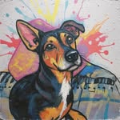

Oficinas
Presidente
Director deportivo

Peinando el mercado
Fichemos mas chistes, nuevas expresiones, resúmenes, juguetes, chucherias, animaciones…
Hazte socio del club, invierte en la cantera, pide mas jogo bonito..

Fichemos mas chistes, nuevas expresiones, resúmenes, juguetes, chucherias, animaciones…
Hazte socio del club, invierte en la cantera, pide mas jogo bonito..
Clon estático de futbolia.org · recuperado y reconstruido en flove/projects · ver la versión mejorada